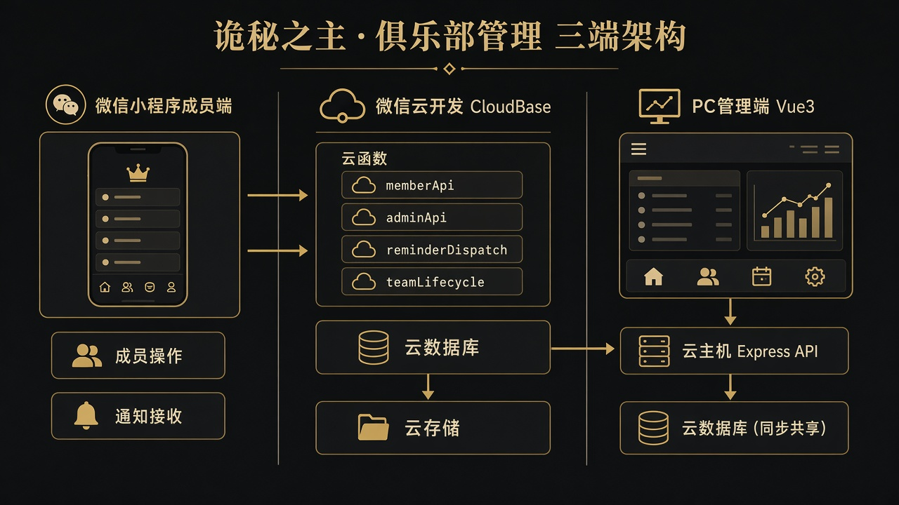
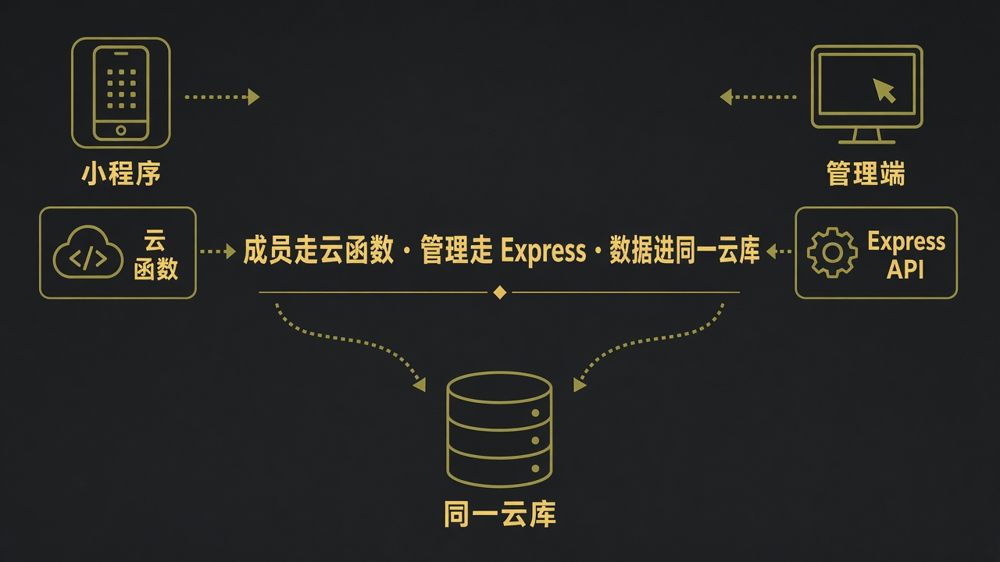
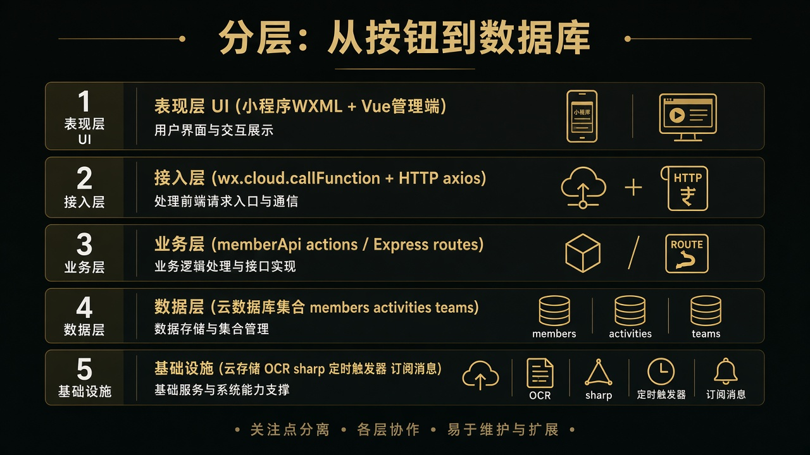
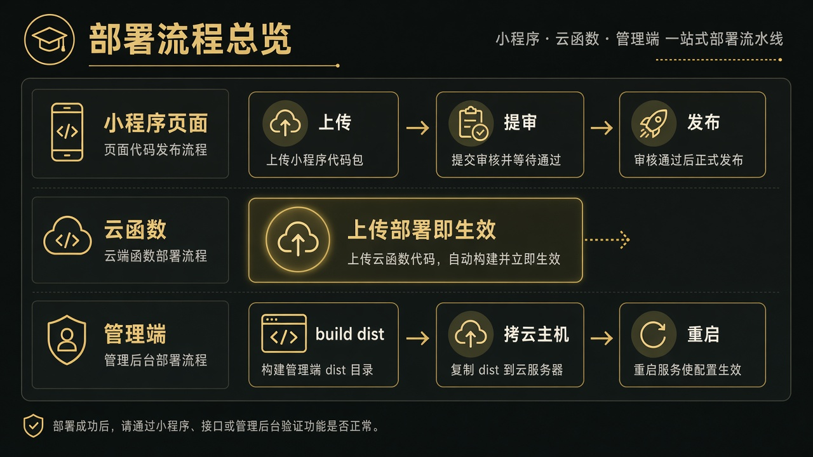

痛点 A · 战力不清
PC 手录 / 截图 OCR 维护非凡评分、风尚度、途径；小程序只读查看。
需求由你口述，技术选型与实现由 Agent 完成。这份手册用图和白话，把「为什么这样造、每块叫什么、怎么连起来」讲清楚，方便你系统复习。
成员战力可查、活动不易忘、组队可招、晒图有氛围、出勤可盘 —— 单俱乐部运营工具。
PC 手录 / 截图 OCR 维护非凡评分、风尚度、途径；小程序只读查看。
今日/本周日程、RSVP、微信订阅提醒；再与组队招募打通。
PC 全能力 + 任命管理员 + 危险重置 + 应急口令。
成员/活动/公告/OCR/出勤/踏云管理；不可任命超管。
小程序：名单、日程、RSVP、组队、晒图、「我的」。
仅邀请码 + 角色名申请绑定；通过前看不到名单细节。
陪玩分账、积分商城、语音、游戏官方 API 自动同步、多俱乐部 SaaS、DKP。

| 目录 | 端 | 职责 |
|---|---|---|
miniprogram/ | 微信小程序 | 成员日常：列表、日程、RSVP、组队、晒图、会务 |
admin/ | PC Web | 运营：CRUD、OCR、看板、导出、扫码登录 |
cloud/ | 后端 | 云函数、Express、定时任务、库规则 |

flowchart LR
subgraph MP[成员端]
A[小程序] -->|callFunction| B[云函数 memberApi]
end
subgraph AD[管理端]
C[Vue admin] -->|HTTP /api| D[Express]
D -->|node-sdk| E[(云数据库/云存储)]
end
B --> E
小程序原生对接云函数最省事（免自备域名即可调后端）；管理端要跑 OCR、大图上传、公网静态页，更适合可控的 Node/Express 进程。两边写的是同一套云库。
前端按钮只是体验；增删改在云函数 / Express 校验。
.env、Secret、应急口令全部 gitignore。
访客未关联角色名，看不到名单与活动细节。
日常微信扫码；另留超管应急账号防换绑。
P0 内部顺序：cloud/API → admin 手录（含 tokens）→ OCR → 小程序，尽早在浏览器看到效果。
业务页禁止写死色值；换肤只改 tokens。品牌强调色 #bda377。途径色：
mindmap
root((俱乐部管理))
身份准入
登录绑定
邀请码
扫码管理端
成员战力
手录
OCR
导出
活动防遗忘
日程
RSVP
提醒
组队LFG
建队审批
到点started
踏云寻芳
晒图点赞
运营增强
公告
出勤看板
本周会务

| 层 | 本项目落点 | 记住一句 |
|---|---|---|
| 表现层 | 小程序 pages + Vue views | 只负责展示与收集输入 |
| 接入层 | callFunction / axios | 统一封装请求与错误 |
| 业务层 | memberApi actions / Express 路由 | 权限、状态机、规则 |
| 数据层 | 云库集合 | 以数据模型草案为准 |
| 基础设施 | 云存储、定时器、OCR、订阅消息 | 横切能力 |
俱乐部管理/
├── docs/ # 产品与方案「权威真相」
├── miniprogram/ # 成员端 → memberApi
├── admin/ # 管理端 → Express /api
└── cloud/
├── functions/ # memberApi · adminApi · reminderDispatch · teamLifecycle
└── dev-server/ # Express + 可选 SERVE_ADMIN 托管 dist
小程序底部三 Tab：首页 / 活动 / 成员。「我的」是内页，不是第四 Tab。
| 领域 | 选型 | 理由（白话） |
|---|---|---|
| 成员端 | 微信小程序原生 | 用户在微信；订阅消息/登录原生；不必做独立 App |
| 管理端 | Vue 3 + Vite + Element Plus | 后台表格表单成熟；开发快；易做暗色主题 |
| 后端 | CloudBase 云函数 + Express | 小程序免运维；管理端 OCR/公网需要自有 Node |
| 数据库 | 云开发文档库 | 与云函数同环境；字段迭代灵活 |
| 文件 | 云存储 | 晒图、图标、OCR 原图；fileID + 临时 URL |
| OCR | 腾讯云 → RapidOCR → Tesseract | 免费本地优先，总能兜底 |
| 图像 | sharp | 压缩缩放踏云图与 OCR 预处理 |
单端微信，原生成本最低，少一层兼容坑。
大屏表格、粘贴截图、导出，桌面浏览器更合适。
零短信成本、微信内触达；代价是用户须主动授权。
点开卡片读白话解释。读完应能向别人复述项目骨架。
小程序身份证。本项目形如 wx0a3fc7a2aee9f66f。
某用户在这个小程序下的唯一编号。绑定成员、发订阅消息都靠它。
体验给内部试，正式对外。订阅消息「下发环境」必须和用户打开的版本一致（trial vs formal）。
上传代码包 → 微信审核 → 发布后用户才看到新包。云函数单独部署，不走小程序审核。
小程序的「HTML / CSS」；逻辑用 JS。
腾讯给小程序的一站式后端：云函数 + 云数据库 + 云存储等，免自建机房。
把 Node 代码上传到云端；小程序 callFunction 触发。类似「按需执行的后端接口」。
文档型数据库（JSON 集合），概念接近 MongoDB，不是传统 MySQL 表。
一类文档的容器，如 members、activities。
存图片等文件；返回 cloud:// fileID；可用临时 HTTPS 链接展示。
按 cron 自动调云函数，例如发提醒的 reminderDispatch、组队到点的 teamLifecycle。
云开发是微信侧托管；你另有 Windows 云主机跑 Express + 管理端静态页。两者用同一套云库密钥连数据。
管理端是单页应用：Vue 管界面，Vite 负责开发与打包，Element Plus 提供表格表单组件。
Express 定义 HTTP API；axios 在浏览器请求；multer 解析上传的 OCR 截图。
把颜色、圆角、间距提成变量；换肤改一处，业务页不写死色值。
RSVP = 出席意向（参加/待定/请假）。实到 = 管理员点名「人来了没」。两套数据，勿混。
订阅消息：用户授权后的微信模板推送。OCR：从图里认字再解析成成员行。LFG：Looking For Group，组队招募。
集合 members；无游戏数字 ID。管理端 Vue 表格 + axios；成员端 membersDb.js。
引擎：腾讯云 → RapidOCR（Python）→ tesseract.js。包：multer、sharp。禁止静默覆盖。
码 + 角色名须已在名单。集合：invite_codes、join_applications、users。
周期 vs 一次性；跨日周常口径在 scheduleMatch.js。RSVP：going / maybe / decline。
reminderDispatch + 触发器。正式环境须 formal。用户先点「提醒我」授权。
建队申请审批；到点改 started。默认上限 6；途径折算 T/N/D 缺口。
主图≈1920 / 缩略≈480；软配额约 2GiB；试用期用临时 URL 互看图。
看板/实到走 Express；会务 weekHub 在 memberApi。订阅触达 A-c 更后。
sequenceDiagram
participant PC as 管理端浏览器
participant API as Express
participant DB as login_tickets
participant MP as 小程序确认页
PC->>API: 创建登录票
API->>DB: pending
API-->>PC: 小程序码
MP->>API: 管理员确认
API->>DB: confirmed + openid
PC->>API: 轮询兑换
API-->>PC: 会话 token

| 场景 | 小程序 | 管理端 | 数据 |
|---|---|---|---|
| 本机开发 | 开发版 | Vite 5173 + API 3789 | 同一云库 |
| 体验验收 | 体验版 | 本机或云主机 | 同一云库 |
| 生产 | 正式版 | 云主机 SERVE_ADMIN | 同一云库 |
| 改动 | 动作 |
|---|---|
miniprogram/ | 上传 → 提审 → 发布 |
cloud/functions/* | 上传并部署（正式用户立刻生效） |
| 定时函数 | 部署 + 确认触发器开启 |
admin/ | npm run build → 拷 dist → 重启 Node |
dev-server | 更新代码并重启（无热重载） |
以为改了云函数也要等小程序审核 —— 不用。云函数部署后正式版立刻吃到新逻辑。
浏览器 ──HTTPS──► Nginx/IIS(443) ──► Node 127.0.0.1:3789
├─ /api/* 业务 API
└─ 其它 admin/dist 静态页
用 pm2/NSSM 保活；正式建议域名 + HTTPS。细节见 管理端公网托管.md。
flowchart TD
A[改 miniprogram] --> B[开发者工具预览]
B --> C[上传代码包]
C --> D{给谁用}
D -->|内部| E[体验版]
D -->|全员| F[提审]
F --> G[审核通过]
G --> H[发布正式版]
I[改云函数] --> J[上传并部署]
J --> K[正式版立即生效]
.env 永不入库和 AI 一起做产品时，文档就是「跨会话记忆」。
| 机制 | 作用 |
|---|---|
AGENTS.md + rules | 跨机器铁律入口 |
功能说明书.md | 产品真相；冲突以它为准 |
进度与交接.md | 当前做到哪、下一步 |
数据模型草案.md | 集合字段契约 |
| 文档与代码同步 | 防止只改代码导致下个会话失忆 |
需求先落文档 → 按阶段切片验收 → 密钥与 dist 分离 → 用进度文件代替聊天记忆。
读本手册 1～5 章；打开三个目录对照；本地起 admin，看 Network 里的 /api。
任选：邀请码绑定 / RSVP+提醒 / OCR 导入。自己画「谁调谁」。
功能说明书活动章节 + scheduleMatch.js —— 业务含金量最高。
成员用小程序 → 云函数 memberApi → 云库 管理用 Vue → Express(/api) → 同一云库（+ OCR/sharp） 提醒/到点 → 定时云函数 主题 → tokens，不写死色 权限 → 服务端认 role；邀请码只绑定不建人 发布 → 小程序要审核；云函数部署即生效；admin 要 build+拷主机
vue · vue-router · element-plus · axios · vite
express · multer · sharp · tesseract.js · @cloudbase/node-sdk
wx-server-sdk（memberApi / reminderDispatch / teamLifecycle…）
原生 WXML/WXSS/JS + wx.cloud.*，无业务 npm 巨石